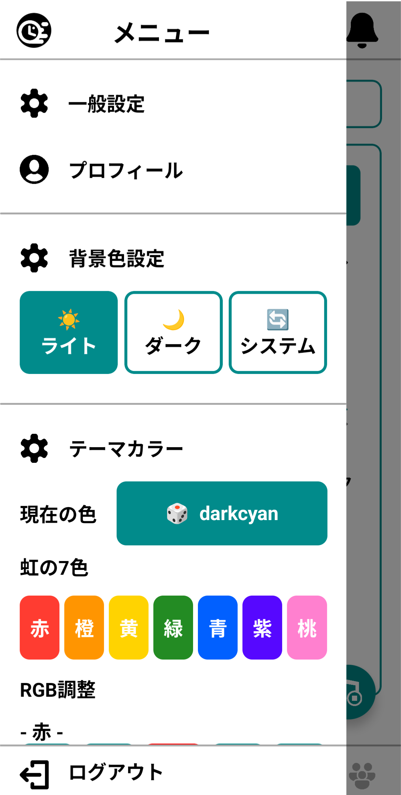
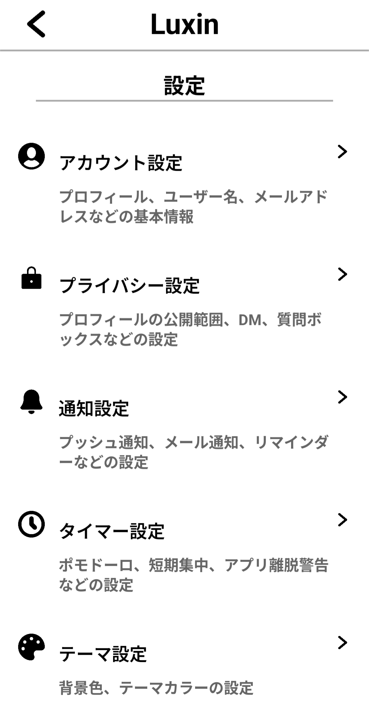
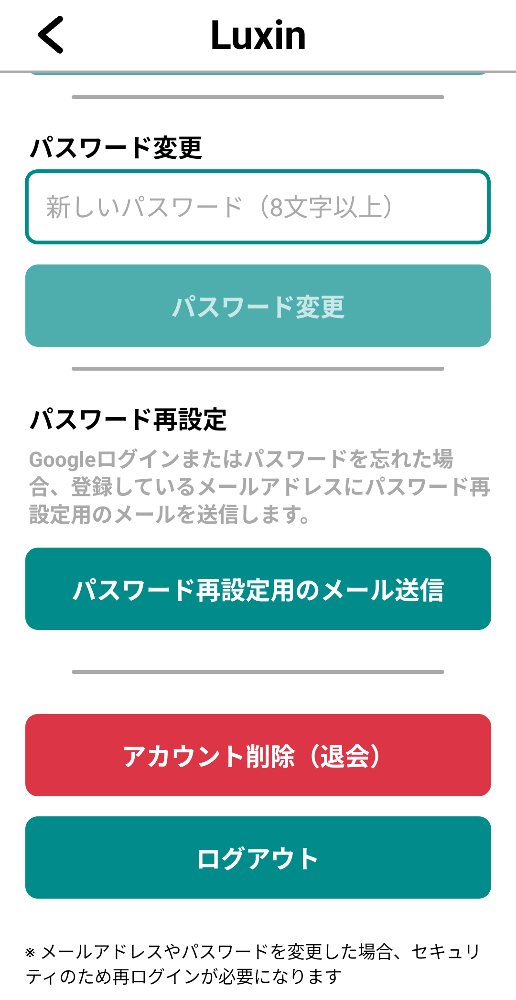

退会の手順
アカウントを削除（退会）するには、以下の手順に従ってください。
1. ログイン後、ホーム画面を開く
アプリにログインした後、ホーム画面が表示されます。

2. メニュードロワーを開く
ホーム画面からメニュードロワーを開きます。

3. 一般設定 > アカウント設定 > アカウント削除(退会)
メニュードロワーから「一般設定」を選択し、「アカウント設定」を開きます。 その後、「アカウント削除(退会)」を選択してください。

注意事項
アカウント削除の手続完了後、保持期間は設けず、直ちに全てのデータを削除します。
アカウントを削除すると、すべてのデータが永久に削除され、復元することはできません。
削除されるデータには、以下のものが含まれます：
・学習記録
・タスク情報
・スケジュール情報
・投稿した記事やコメント
・その他のすべてのアカウント情報
退会をご希望の場合は、上記の手順に従って進めてください。